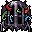

這い回る肉の檻 Crawling flesh cage
英語版 CrawlWiki の記事「Crawling flesh cage」(0.34 向け、2026-09-24 版)の翻訳です。原文の著者は編集履歴をご覧ください。
| 這い回る肉の檻 x  | |
|---|---|
| HP | 59-120 |
| HD | 15 |
| XP | 755 |
| 速度 | 10 |
| AC | 16 |
| EV | 4 |
| 意志力 | 60 |
| 攻撃1 | 24（触手の一撃: 醜きものの薙ぎ払い）
|
| 耐性 | rF+ rC+ rPois+ rElec rAcid |
| 弱点 | 銀 |
| 生息地 | 陸上 |
| 知能 | 動物並み |
| 使用 | 扉を開ける |
| 分類 | 生物 |
| 体格 | 大きい |
| 種類 | 這い回る肉の檻、這い回る肉の檻 |
| フラグ | 温血 群れ 派生体を生成しない 変化不可 骨格なし ゾンビ化不可 |

| 秘術実験における近年の飛躍的な成果である、この移動式の監房は、かつて脱走した醜きものの生きた断片を兵器として用い、その触手の届く範囲を広げて、離れた所から複数の敵を同時に打ち据える。 |
基本情報
這い回る肉の檻は、堕落した魔術師たちが生み出したおぞましい作品で、何体もの醜きものを融合させ、動く檻に閉じ込めたものだ。独自の攻撃の追加効果を持ち、離れたところまで攻撃が届き、2マス以内の相手をすべて薙ぎ払い、攻撃のたびに醜きもの由来のダメージ(火炎、冷気、毒、電撃、酸、魔力阻害のどれか)をランダムに与える。さらに、これらの属性すべてにある程度の耐性があり、意志力も高い。宝物庫にいて、秘術師に率いられていることが多い。
戦略
- 這い回る肉の檻は、敵の大きな群れに混じっているとぐっと危険になる。味方越しに攻撃でき、さまざまな種類のダメージを与えてくるからだ。倒せるなら優先して倒そう。
- 仲間に頼る育成は、どんなものでもこれには苦戦する。出会ったときに備えて、別のダメージ源を用意しておこう。
小技
- 這い回る肉の檻にはリーの瞬間解体術を撃ち込める。
- 這い回る肉の檻はゾンビにできない。
- 這い回る肉の檻は変化させられない。変化させようとしてもタイルが変わるだけで、ほかには何も起こらない。
- 近くに鉄縛の猛獣使いがいないか気をつけよう。這い回る肉の檻を加速させることがある。
- 混沌の存在なので、銀に弱い。
変更履歴
- 這い回る肉の檻は0.34で追加され、宝物庫の醜きものに取って代わった。